6 Régressions linéaires
6.1 Rappels
On souhaite étudier la liaison entre une variable \(y\) et une ou plusieurs variables \(x_1, x_2, \ldots, x_m\). La variable \(y\) est appelée variable à expliquer, ou réponse (ou encore target) et les variables \(x_j\), \(j = 1, 2, \ldots, m\) sont appelées variables explicatives (features). On suppose que la relation entre la variable à expliquer et les variables explicatives est de la forme \(y = f(x_1, x_2, \ldots, x_m)\), avec \(m\) le nombre de variables explicatives. On émet l’hypothèse que la réponse est linéairement indépendante des variables \(x_j\), avec \(j = 1, \ldots, m\).
Il s’agit d’estimer les coefficients \(\beta_j\) de l’équation à \(m\) variables explicatives \(x_j\), avec \(j=1,2,\cdots, m\), \(\beta_0\) étant la constante, et \(\varepsilon\) un terme d’erreur supposé normal : \[\begin{equation} \boldsymbol y = \beta_0 + \beta_1 \boldsymbol x_1 + \beta_2 \boldsymbol x_2 + \cdots + \beta_j \boldsymbol x_j + \cdots + \beta_m \boldsymbol x_m + \boldsymbol \varepsilon.\label{eq:chap_5_reg_mult} \end{equation}\]
Soit, en termes matriciels \[\begin{equation} \boldsymbol y = \boldsymbol X \boldsymbol \beta + \boldsymbol \varepsilon,\label{eq:chap_5_reg_mult_mat} \end{equation}\] \[\begin{align*} \textrm{où } \boldsymbol y = \begin{bmatrix} y_1 \\ y_2 \\ \vdots \\ y_n \end{bmatrix}, \, \boldsymbol X = \begin{bmatrix} 1 & x_{11} & x_{12} & \cdots & x_{1m} \\ 1 & x_{21} & x_{22} & \cdots & x_{2m} \\ 1 & \vdots & \vdots & \ddots & \vdots \\ 1 & x_{n1} & x_{n2} & \cdots & x_{nm} \end{bmatrix}, \, \boldsymbol \beta = \begin{bmatrix} \beta_0\\ \beta_1\\ \beta_2\\ \vdots\\ \beta_m \end{bmatrix} \textrm{ et } \boldsymbol \varepsilon = \begin{bmatrix} \varepsilon_1\\ \varepsilon_2\\ \vdots\\ \varepsilon_m \end{bmatrix}. \end{align*}\]
Les coefficients \(\beta_j\) sont inconnus et estimés par \(\hat{\beta}_j\) tels que : \[\begin{align*} \begin{cases} \hat{y_1} & = \hat{\beta}_{0} +\hat{\beta}_1 x_{11} + \hat{\beta}_2 x_{12} + \cdots + \hat{\beta}_j x_{1j} + \hat{\beta}_m x_{1m}\\ \hat{y_2} & = \hat{\beta}_{0} + \hat{\beta}_1 x_{21} + \hat{\beta}_2 x_{22} + \cdots + \hat{\beta}_j x_{2j} + \hat{\beta}_m x_{2m}\\ \vdots & = \vdots\\ \hat{y_n} & = \hat{\beta}_{0} + \hat{\beta}_1 x_{n1} + \hat{\beta}_2 x_{n2} + \cdots + \hat{\beta}_j x_{nj} + \hat{\beta}_m x_{nm}\\ \end{cases}. \end{align*}\]
En termes matriciels, cela donne : \[\begin{equation} \hat{\boldsymbol y} = \boldsymbol X \hat{\boldsymbol \beta},\label{eq:chap_5_reg_mult_mat_1} \end{equation}\] \[\begin{align*} \textrm{où } \hat{\boldsymbol y} = \begin{bmatrix} \hat{y}_1 \\ \hat{y}_2 \\ \vdots \\ \hat{y}_n \end{bmatrix}, \, \boldsymbol X = \begin{bmatrix} 1 & x_{11} & x_{12} & \cdots & x_{1m} \\ 1 & x_{21} & x_{22} & \cdots & x_{2m} \\ 1 & \vdots & \vdots & \ddots & \vdots \\ 1 & x_{n1} & x_{n2} & \cdots & x_{nm} \end{bmatrix}, \textrm{ et } \hat{\boldsymbol \beta} = \begin{bmatrix} \hat{\beta}_0\\ \hat{\beta}_1\\ \hat{\beta}_2\\ \vdots\\ \hat{\beta}_m \end{bmatrix}. \end{align*}\]
Avec la méthode des moindres carrés, l’objectif est de trouver \(\hat{\boldsymbol\beta}\) tels que la somme des carrés des résidus soit minimale. La somme des carrés des résidus est définie par : \[\mid \mid \boldsymbol y - \boldsymbol X \boldsymbol \beta \mid \mid^2 = \sum_{i=1}^{n} (y_i - x_i \beta)^2.\]
La condition du premier ordre donne3 :6.2 Données de l’exemple
Nous allons nous appuyer sur des données de naissances à Philadelphie, en 1990 (Elo, Rodgriguez, and Lee 2001). L’échantillon concerne \(5\%\) des naissances ayant eu lieu dans cette ville en 1990, ce qui représente \(1115\) observations. Chaque enregistrement renseigne sur :
grams: masse à la naissance (grammes) ;gestate: temps de gestation (semaines) ;educ: nombre d’années d’éducation de la mère (0–17);black: variable indicatrice de la couleur de peau de la mère (1 si oui, 0 sinon);smokeindique si la mère a fumé pendant la grossesse (1 si oui, 0 sinon).
Attention, ce qui est proposé dans cette section ne constitue pas un fil d’Ariane pour réaliser une analyse sur des données. L’idée est de montrer au lecteur les fonctions principales, pour que ce premier puisse réaliser par lui-même ses analyses. D’excellentes références proposent d’aller plus loin au sujet de la régression (Matzner-Løber 2007, @Lafaye_2011_Logiciel, @Dalgaard_2008_Introductory).
Une très rapide visualisation des données est l’occasion d’introduire ici la fonction grid.arrange() du package {gridExtra}, qui permet de positionner des graphiques réalisés avec {ggplot2} sur une grille.
url <- "http://data.princeton.edu/wws509/datasets/phbirths.dat"
births <- read.table(url, header = TRUE)
head(births)## black educ smoke gestate grams
## 1 FALSE 0 TRUE 40 2898
## 2 TRUE 0 TRUE 26 994
## 3 FALSE 2 FALSE 38 3977
## 4 FALSE 2 TRUE 37 3040
## 5 FALSE 2 FALSE 38 3523
## 6 FALSE 5 TRUE 40 3100# Un aperçu des données
summary(births)## black educ smoke gestate grams
## Mode :logical Min. : 0.00 Mode :logical Min. :20.00 Min. : 284
## FALSE:453 1st Qu.:11.00 FALSE:846 1st Qu.:38.00 1st Qu.:2900
## TRUE :662 Median :12.00 TRUE :269 Median :39.00 Median :3267
## Mean :12.27 Mean :38.84 Mean :3220
## 3rd Qu.:13.00 3rd Qu.:40.00 3rd Qu.:3630
## Max. :17.00 Max. :43.00 Max. :4830# Les corrélations
round(cor(births), 2)## black educ smoke gestate grams
## black 1.00 -0.15 0.05 -0.17 -0.26
## educ -0.15 1.00 -0.23 0.06 0.12
## smoke 0.05 -0.23 1.00 -0.15 -0.23
## gestate -0.17 0.06 -0.15 1.00 0.70
## grams -0.26 0.12 -0.23 0.70 1.00# Un aperçu graphique des données
library(ggplot2)
qplot(data = births, grams, fill = I("dodger blue"))
qplot(data = births, gestate, fill = I("dodger blue"))
qplot(data = births, educ, fill = I("dodger blue"))
qplot(data = births, black, fill = I("dodger blue"))
qplot(data = births, smoke, fill = I("dodger blue"))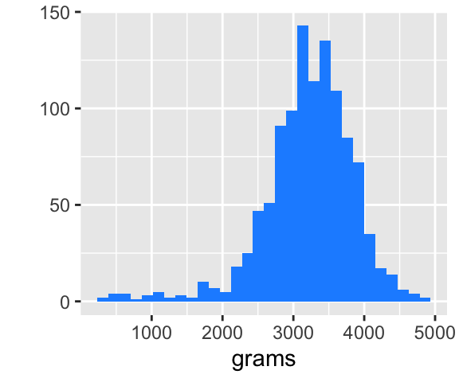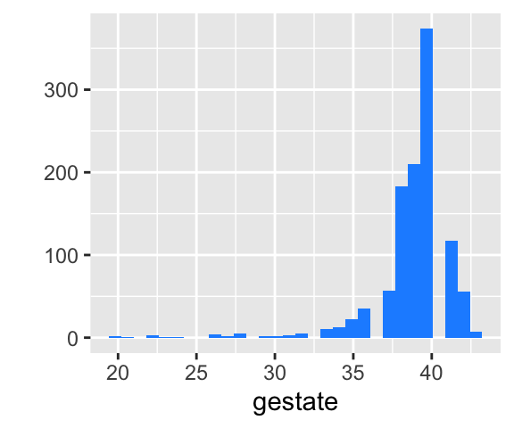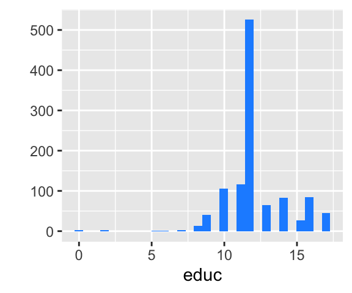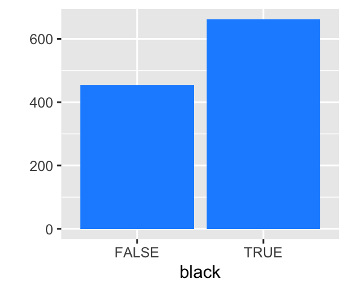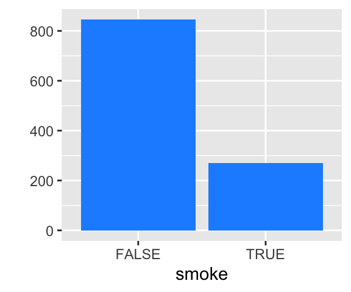
Si on souhaite regarder les différentes valeurs que prennent chaque variable pour chaque observation, on peut utiliser la petite astuce consistant à utiliser la fonction seq_along().
# Pour avoir des nuages de points
p_1 <- qplot(data = births, seq_along(grams), grams) + xlab("Index")
p_2 <- qplot(data = births, seq_along(gestate), gestate) + xlab("Index")
p_3 <- qplot(data = births, seq_along(educ), educ) + xlab("Index")
library(gridExtra)
grid.arrange(p_1, p_2, p_3, ncol=3)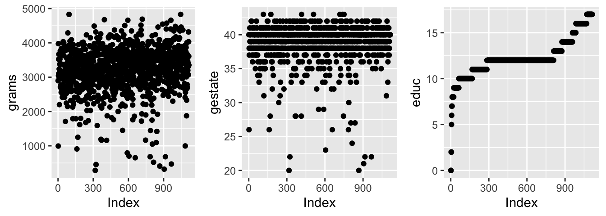
Pour avoir une idée de la relation possible entre la réponse et chaque variable explicative, il est intéressant de tracer les graphiques suivants.
p_1 <- qplot(data = births, grams, gestate,
geom = c("point", "smooth"))
p_2 <- qplot(data = births, educ, gestate,
geom = c("point", "smooth"))
p_3 <- qplot(data = births, black, gestate, position = "jitter")
p_4 <- qplot(data = births, smoke, gestate, position = "jitter")
grid.arrange(p_1, p_2, p_3, p_4, ncol=2)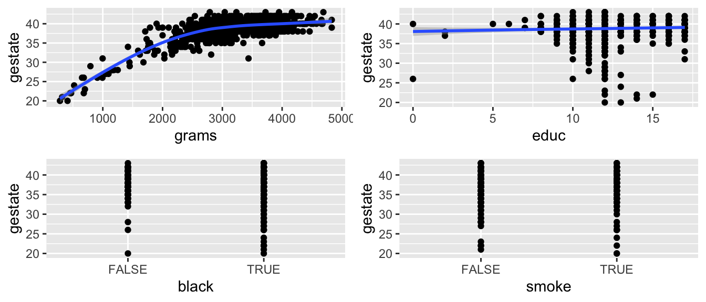
6.3 Estimation des paramètres {#}
La fonction permettant de réaliser une régression linéaire avec R se nomme lm(). Il est nécessaire de fournir une formule à l’arguemnt formula. L’argument data indique le tableau de données (la liste, ou un objet convertible en data.frame) dans lequel les variables mentionnées dans la formule se trouvent.
reg <- lm(grams ~ gestate, data = births)
reg##
## Call:
## lm(formula = grams ~ gestate, data = births)
##
## Coefficients:
## (Intercept) gestate
## -3245.4 166.4On lit dans la sortie que le coefficient de la constante vaut -3245.446394 et que le coefficient associé à la variable gestate vaut 166.4462854.
Comme on peut le voir sur les graphiques proposés précédemment, la relation entre la masse du nouveau né et le temps de gestation semble plus quadratique que linéaire. Pour introduire le carré de la durée de gestation, on utilise la fonction I().
reg_2 <- lm(grams ~ gestate + I(gestate^2), data = births)
reg_2##
## Call:
## lm(formula = grams ~ gestate + I(gestate^2), data = births)
##
## Coefficients:
## (Intercept) gestate I(gestate^2)
## -4545.933 243.159 -1.1086.4 Lecture des sorties
Une des fonctions les plus utiles autour de la régression linéaire avec R~est summary(). Elle affiche plusieurs éléments :
Call: la fomule du modèle ;Residuals: des statistiques descriptives des résidus ;Coefficients: un tableau à deux entrées où les lignes correspondent aux coefficients associés aux variables explicatives, et les colonnes, dans l’ordre, à l’estimation du coefficient, l’écart-type estimé, la valeur du test de Student de nullité statistique du coefficient et enfin la p-value associé à ce test, suivie d’un symbole pour lire rapidement la significativité ;Signif. codes: les significations des symboles de niveau de significativité ;Residual standard error: estimation de l’écart-type de l’aléa et degré de liberté ;Multiple R-squared: coefficient de détermination ;Adjusted R-squared: coefficient de détermination ajusté ;F-statistic: valeur de la statistique de Fisher du test de significativité globale, ainsi que les degrés de liberté et la p-value associée au test.
summary(reg)##
## Call:
## lm(formula = grams ~ gestate, data = births)
##
## Residuals:
## Min 1Q Median 3Q Max
## -1512.41 -302.17 -12.41 285.15 1584.04
##
## Coefficients:
## Estimate Std. Error t value Pr(>|t|)
## (Intercept) -3245.45 197.01 -16.47 <2e-16 ***
## gestate 166.45 5.06 32.89 <2e-16 ***
## ---
## Signif. codes: 0 '***' 0.001 '**' 0.01 '*' 0.05 '.' 0.1 ' ' 1
##
## Residual standard error: 451.3 on 1113 degrees of freedom
## Multiple R-squared: 0.4929, Adjusted R-squared: 0.4925
## F-statistic: 1082 on 1 and 1113 DF, p-value: < 2.2e-166.5 Extractions
L’objet retourné par la régression contient plusieurs éléments auxquels il est possible d’accéder. Voici les principaux
coefficientsun vecteur de coefficients (nommé) ;residualsles résidus ;fitted.values: les valeurs estimées ;df.residual: nombre de degrés de liberté.
names(reg)## [1] "coefficients" "residuals" "effects" "rank"
## [5] "fitted.values" "assign" "qr" "df.residual"
## [9] "xlevels" "call" "terms" "model"reg$coefficients## (Intercept) gestate
## -3245.4464 166.4463# Résidus
qplot(seq_along(reg$residuals), reg$residuals) +
xlab("") + ylab("Résidus")
# Ordonnons les résidus en fonction de la masse des nouveaux-nés
ind <- order(births$grams)
qplot(seq_along(reg$residuals[ind]), reg$residuals[ind]) +
xlab("") + ylab("Résidus")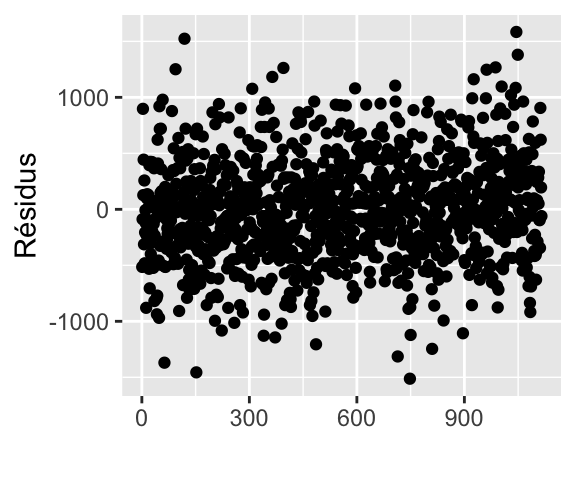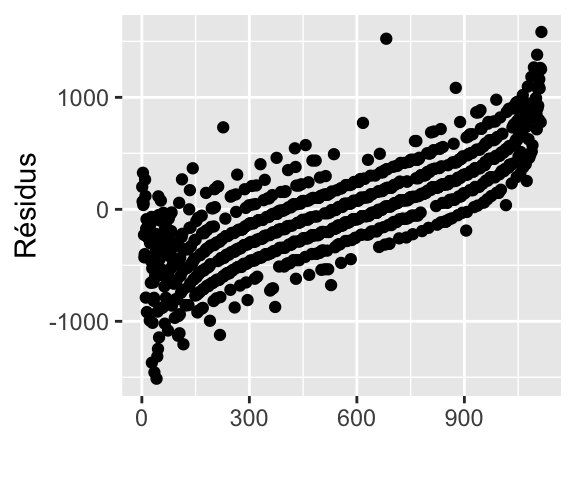
Certaines fonctions permettent également d’accéder aux éléments de la régression, comme residuals() (ou resid()), fitted() ou encore coefficients() (ou coef()) qui retournent les résidus, les valeurs estimées et les coefficients de la régression respectivement. Ces fonctions prennent en argument l’objet retourné par lm(). Voici un exemple d’utilisation de residuals(), pour tracer la droite de Henry (QQ-plot).
qqplot <- function(y, distribution=qnorm, title = "Droite de Henry",
xlab = "Quantiles théoriques",
ylab = "Résidus studentisés") {
if(class(y) == "lm"){
# Résidus
r <- residuals(y)
# Résidus studentisés
y <- r / sqrt(deviance(y) / df.residual(y))
}
x <- distribution(ppoints(y))
df <- data.frame(x = x, y = sort(y))
ggplot(df, aes(x = x, y = y)) +
geom_point() +
geom_abline(intercept = 0, slope = 1, col = "red") +
ggtitle(title) +
xlab(xlab) + ylab(ylab)
}
qqplot(reg)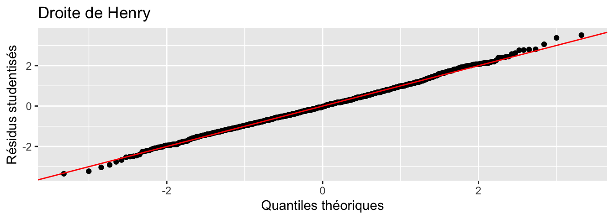
6.6 Variables catégorielles
En R, les variables catégorielles sont de mode factor. Si on souhaite intégrer une variable catégorielle à un modèle de régression linéaire, il y a deux méthodes. La première, est de définir le type de la variable dans le tableau qui contient les données (tibble, data.frame, …). La seconde est d’utiliser la variable factor() dans la formule, lors de l’appel de la régression. La première méthode possède l’avantage de la lisibilité, surtout lorsque l’on souhaite définir la valeur de référence.
Lorsque la variable est de type logical ou character, la conversion est faite automatiquement par R. Le choix de la classe de référence est aussi effectué automatiquement.
class(births$smoke)## [1] "logical"summary(reg_3 <-
lm(grams ~ gestate + smoke + black,
data = births))##
## Call:
## lm(formula = grams ~ gestate + smoke + black, data = births)
##
## Residuals:
## Min 1Q Median 3Q Max
## -1464.13 -295.56 1.86 287.70 1611.83
##
## Coefficients:
## Estimate Std. Error t value Pr(>|t|)
## (Intercept) -2713.653 199.723 -13.587 < 2e-16 ***
## gestate 156.570 5.016 31.213 < 2e-16 ***
## smokeTRUE -185.015 30.883 -5.991 2.82e-09 ***
## blackTRUE -174.402 27.027 -6.453 1.64e-10 ***
## ---
## Signif. codes: 0 '***' 0.001 '**' 0.01 '*' 0.05 '.' 0.1 ' ' 1
##
## Residual standard error: 436.3 on 1111 degrees of freedom
## Multiple R-squared: 0.5269, Adjusted R-squared: 0.5256
## F-statistic: 412.4 on 3 and 1111 DF, p-value: < 2.2e-16# Equivalent de
summary(reg_3 <-
lm(grams ~ gestate + factor(smoke) + factor(black),
data = births))##
## Call:
## lm(formula = grams ~ gestate + factor(smoke) + factor(black),
## data = births)
##
## Residuals:
## Min 1Q Median 3Q Max
## -1464.13 -295.56 1.86 287.70 1611.83
##
## Coefficients:
## Estimate Std. Error t value Pr(>|t|)
## (Intercept) -2713.653 199.723 -13.587 < 2e-16 ***
## gestate 156.570 5.016 31.213 < 2e-16 ***
## factor(smoke)TRUE -185.015 30.883 -5.991 2.82e-09 ***
## factor(black)TRUE -174.402 27.027 -6.453 1.64e-10 ***
## ---
## Signif. codes: 0 '***' 0.001 '**' 0.01 '*' 0.05 '.' 0.1 ' ' 1
##
## Residual standard error: 436.3 on 1111 degrees of freedom
## Multiple R-squared: 0.5269, Adjusted R-squared: 0.5256
## F-statistic: 412.4 on 3 and 1111 DF, p-value: < 2.2e-16Pour changer la valeur de référence, on peut utiliser la fonction fct_relevel() de {forcast}, ou bien préciser manuellement les niveaux au moment de la créqtion du facteur (le premier niveau énoné devenant la modalité de référence).
births <-
births %>%
mutate(smoke = factor(smoke))
levels(births$smoke)## [1] "FALSE" "TRUE"births <-
births %>%
mutate(smoke = fct_relevel(smoke, "TRUE"))
# Au moment de la création
births <-
births %>%
mutate(black = factor(black, levels = c("TRUE", "FALSE"),
labels = c("Black", "Not Black")))
reg_3 <- lm(grams ~ gestate + smoke + black, data = births)
summary(reg_3)##
## Call:
## lm(formula = grams ~ gestate + smoke + black, data = births)
##
## Residuals:
## Min 1Q Median 3Q Max
## -1464.13 -295.56 1.86 287.70 1611.83
##
## Coefficients:
## Estimate Std. Error t value Pr(>|t|)
## (Intercept) -3073.071 191.836 -16.019 < 2e-16 ***
## gestate 156.570 5.016 31.213 < 2e-16 ***
## smokeFALSE 185.015 30.883 5.991 2.82e-09 ***
## blackNot Black 174.402 27.027 6.453 1.64e-10 ***
## ---
## Signif. codes: 0 '***' 0.001 '**' 0.01 '*' 0.05 '.' 0.1 ' ' 1
##
## Residual standard error: 436.3 on 1111 degrees of freedom
## Multiple R-squared: 0.5269, Adjusted R-squared: 0.5256
## F-statistic: 412.4 on 3 and 1111 DF, p-value: < 2.2e-16Une alternative à fct_relevel() est la fonction relevel():
exemple <- relevel(births$smoke, ref = "FALSE")
levels(exemple)## [1] "FALSE" "TRUE"6.7 Tests de nullité des coefficients et intervalles de confiance
Soit le problème de test : \[\begin{align*} \begin{cases} H_0 : \beta_i = 0\\ H_1 : \beta_i \ne 0 \end{cases}, i = 1, 2, \ldots, m. \end{align*}\]
La statistique de test est la suivante : \[\begin{align*} T = \frac{\hat{\beta}_i - \beta_{i,H_0}}{\hat{\sigma}_{\hat{\beta}_i}} \sim \mathcal{S}t(n-m-1,) \end{align*}\] avec \(\beta_{i,H_0}\) la valeur de \(\beta_j\) sous l’hypothèse nulle, \(\hat{\sigma}_{\hat{\beta}_i}\) l’estimation de l’écart-type de l’estimation du paramètre \(\beta_i\).
Pour effectuer ce test bilatéral, on peut lire dans la table de la loi de Student deux fractiles tels que : \[\begin{align*} \mathbb{P}\left( -t_{1-\alpha/2} < \frac{\hat{\beta}_i - \alpha_{i,H_0}}{\hat{\sigma}_{\hat{\beta}_i}} < t_{1-\alpha/2} \right) = 1 - \alpha. \end{align*}\] avec \(\alpha\) le risque de première espèce.
à partir des observations, il est possible de calculer : \[\begin{align*} t_{i,\textrm{obs.}} = \frac{\hat{\beta}_i}{\hat{\sigma}_{\hat{\beta}_i}}. \end{align*}\]
La règle de décision est la suivante :
- si \(t_{i,\textrm{obs.}} \in [-t_{1-\alpha/2}, t_{1-\alpha/2}]\), nous somme dans la région d’acceptation, on ne rejette donc pas \(H_0\) au seuil de \(\alpha\), et on considère alors que \(\alpha_i\) n’est pas statistiquement différent de zéro ;
- si en revanche \(t_{i,\textrm{obs.}} \notin [-t_{1-\alpha/2}, t_{1-\alpha/2}]\), nous sommes dans la région critique et cette fois on rejette l’hypothèse nulle en faveur de l’hypothèse alternative. On considère alors qu’avec un risque de première espèce de \(\alpha\), on a \(\alpha_i \ne 0\).
Sous R, comme vu dans la Section @ref(regressions_lecture), les tests de nullité de chaque coefficients sont effectués lors de l’appel de la fonction summary() sur l’objet retourné par la fonction lm(). Pour obtenir les intervalles de confiance, on peut s’amuser à extraire soi-même les coefficients et les écarts-types associés, pour faire le calcul à la main, ou bien avoir recours à la fonction confint(). Il suffit de lui fournir l’objet retourné par la fonction lm(), et de préciser éventuellement un niveau (le niveau par défaut étant \(95\%\)).
# Intervalles de confiance à 95% pour les paramètres
confint(reg_3)## 2.5 % 97.5 %
## (Intercept) -3449.4726 -2696.6686
## gestate 146.7278 166.4120
## smokeFALSE 124.4204 245.6101
## blackNot Black 121.3724 227.4324# Intervalles de confiance à 90% pour les paramètres
confint(reg_3, level = 0.95)## 2.5 % 97.5 %
## (Intercept) -3449.4726 -2696.6686
## gestate 146.7278 166.4120
## smokeFALSE 124.4204 245.6101
## blackNot Black 121.3724 227.4324Voici une fonction qui permet d’afficher les intervalles de confiance pour chaque coefficient.
#' @param x : objet issu de lm()
confint_bar <- function(x){
df <- data.frame(confint(x))
colnames(df) <- list("b_inf", "b_sup")
df$variable <- rownames(df)
rownames(df) <- NULL
df$coef <- coef(x)
ggplot(df, aes(x = factor(1), y = coef)) +
geom_errorbar(aes(ymin = b_inf, ymax = b_sup)) +
geom_point(col = "dodger blue", size = 3) +
geom_hline(yintercept = 0, linetype = "dashed") +
facet_wrap(~variable, scales = "free_y") +
xlab("") +
theme(axis.ticks = element_blank(),
axis.text.x = element_blank())
}On peut alors appliquer cette fonction au résultat d’une régression linéaire :
confint_bar(reg_3)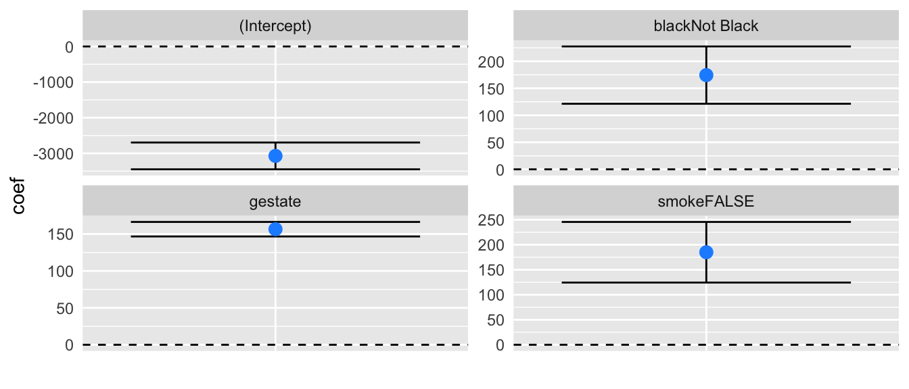
6.8 Prévisions
Une fois que la fonction lm()4 a estimé les paramètres du modèle, il est possible de réutiliser les estimations pour effectuer des prévisions, avec des nouvelles données. On considère un nouvel enregistrement, \(\boldsymbol{x}^\top_{n+1} = \begin{bmatrix} x_{n+1, 1} & x_{n+1, 2} & \ldots & x_{n+1, m} \end{bmatrix}\), et l’objectif est de prévoir la valeur de \(y_{n+1}\), en utilisant la relation initiale :
\[\begin{equation}
y_{n+1} = \beta_0 + \beta_1 \boldsymbol x_{n+1,1} + \beta_2 \boldsymbol x_{n+1,2} + \cdots + \beta_m \boldsymbol x_{n+1,m} + \boldsymbol \varepsilon_{n+1}.\label{eq:regressions_previsions},
\end{equation}\]
où \(\mathbb{E}[\varepsilon_{n+1}] = 0\), \(\mathbb{V}(\varepsilon_{n+1}) = \sigma^2\) et \(\mathbb{C}ov(\varepsilon_{n+1}, \varepsilon_{i}) = 0\), \(i = 1, 2, \ldots, n\).\
La valeur prévue, \(\hat y_{n+1}^p\) s’appuie sur les coefficients estimés par le modèle : \[\begin{equation} \hat y_{n+1}^p = \hat\beta_0 + \hat\beta_1 \boldsymbol x_{n+1,1} + \hat\beta_2 \boldsymbol x_{n+1,2} + \cdots + \hat\beta_m \boldsymbol x_{n+1,m}.\label{eq:regressions_previsions_2} \end{equation}\] On note \(z_{n+1} = y_{n+1} - \hat y_{n+1}^p\) l’erreur de prévision. On a : \[\begin{align} \begin{cases} \mathbb{E}[z_{n+1}] = 0\\ \mathbb{V}(z_{n+1}) = \sigma^2 \times \left( 1 + \boldsymbol {x}^\top_{n+1} (\boldsymbol X^\top \boldsymbol X)^{-1} \boldsymbol x_{n+1} \right) \end{cases} \end{align}\]
Comme on émet l’hypothèse que la distribution des \(\varepsilon_i\) est normale, la distribution des \(y_{i}\) et \(\hat y_{i}^p\) l’est aussi. De fait, on a : \[\begin{align} z_i^p \sim \mathcal{N}\left(0,\sqrt{\mathbb{V}(z_i^p)}\right). \end{align}\]
On peut estimer la variance inconnue \(\sigma^2_\varepsilon\) par son estimation \(\hat{\sigma}^2_\varepsilon\).
Dès lors, on a : \[\begin{align} \frac{z_i^p - \mathbb{E}(z_i^p)}{\hat{\sigma}_{\varepsilon}} \sim \mathcal{S}t(n-2). \end{align}\]
Il est alors possible de construire un intervalle de confiance au seuil de \(\alpha\) pour \(y_i^p\), soit : \[\begin{align} \widehat{\textrm{I.C.}_{y_{n+1}}(1-\alpha)} = \left[ \hat{y}_{n+1}^p \pm t_{1-\alpha/2} \cdot \hat{\sigma}_{z_{n+1}^p} \right], \end{align}\] où \(t_{1-\alpha/2}\) est la valeur du fractile lue dans la table pour \(\alpha\) et \(\gamma = n-2\) degrés de liberté.\
R propose la fonction predict() pour calculer cet intervalle de prévision. L’objet retourné par la fonction lm() est passé en argument à la fonction predict(). Si aucun autre argument n’est fourni, l’évaluation retourne les valeurs estimées pour la variable à expliquer.
all.equal(predict(reg_3), fitted(reg_3))## [1] TRUESi en revanche, on ajoute de nouvelles données, en les passant à l’arguemnt newdata, alors le modèle estimé est utilisé à partir de ces nouvelles données pour fournir des prévisions. Il faut toutefois faire attention à ce que les noms des variables du nouveau tableau de données soient identiques à celui passé dans la fonctionlm().
donnees_supl <-
tibble(black = factor(c(TRUE, FALSE),
levels = c(TRUE, FALSE),
labels = c("Black", "Not Black")),
educ = c(10,5),
smoke = factor(c(FALSE, FALSE)),
gestate = c(39, 43))
predict(reg_3, newdata = donnees_supl)## 1 2
## 3218.171 4018.853Par défaut, les intervalles de prévision de sont pas donnés, il faut forcer leur calcul en donnant la valeur "prediction" à l’arguemnt interval. L’intervalle de confiance pour la valeur prévue est donné pour un risque de première espèce de \(5\%\). Pour un risque de première espèce différent, il faut changer la valeur de l’argument level.
# I.C. à 95% pour la prévision
predict(reg_3, newdata = donnees_supl, interval = "prediction")## fit lwr upr
## 1 3218.171 2361.229 4075.113
## 2 4018.853 3161.006 4876.700# I.C. à 90% pour la prévision
predict(reg_3, newdata = donnees_supl, interval = "prediction", level = 0.9)## fit lwr upr
## 1 3218.171 2499.187 3937.155
## 2 4018.853 3299.109 4738.597On peut demander d’afficher les valeurs des écarts-types, avec l’argument se.fit.
predict(reg_3, newdata = donnees_supl, interval = "prediction", se.fit = TRUE)## $fit
## fit lwr upr
## 1 3218.171 2361.229 4075.113
## 2 4018.853 3161.006 4876.700
##
## $se.fit
## 1 2
## 18.79725 27.50835
##
## $df
## [1] 1111
##
## $residual.scale
## [1] 436.34236.9 Exercices sur la régression
Exercice 1 : exploration rapide des données
Cet exercice s’appuie sur un jeu de données de consommation de carburant de 392 véhicules. Il provient de la bibliothèque StatLib, maintenue à la Carnegie Mellon University5.
- Charger le jeu de données
Autocontenu dans le package{ISLR}, puis regarder sa page d’aide ; - Afficher un résumé des différentes variables ;
- En utilisant la fonction
stargazer()contenue dans le package du même nom, aficher dans la console un tableau de statistiques descriptives en sortie texte ASCII. Prendre soin de limiter à deux le nombre de chiffres des décimales ; - Exporter ce tableau dans un fichier
HTML, en prenant soin d’ajouter le titre suivant : “Statistiques descriptives”. De plus, changer le séparateur des décimales en une virgule au lieu d’un point ; - Représenter par un nuage de points la relation entre les variables de puissance (
horsepower) et de consommation (mpg), puis sur un autre graphique, la relation entre la masse du véhicule (weight) et sa consommation ; - Reprendre le code du graphique représentant la consommation en fonction de la masse du véhicule, et faire dépendre la couleur des points du nombre de cylindres (le nombre de cylindres sera considéré comme une variable catégorielle). Puis, ajouter des courbes de tendance pour chaque catégorie de cylindres à l’aide de la fonction
stat_smooth(). Ces courbes de tendance devront être estimées à l’aide d’une régression linéaire. - Afficher un tableau des corrélations entre chaque variables numériques ;
- En utilisant la fonction
corrplot.mixed()du package{corrplot}, réaliser une visualitation graphique de la matrice de corrélation.
Exercice 2 : régression linéaire
Cet exercice s’appuie sur le même jeu de données que le précédent.
Préparer deux tableaux de données : l’un comprenant \(80\%\) des observations, et le second les \(20\%\) restantes. Les observations à conserver dans le tableau contenant \(80\%\) des observations doivent être tirées au hasard ;
En prenant comme jeu de données la base avec \(80\%\) des observations, régresser la consommation (
mpg) sur la puissance (horsepower), la masse (weight) et l’année de mise en circulation (year), en faisant appel à la fonctionlm();Afficher un résumé de l’estimation à l’aide de la fonction
summary, puis extraire uniquement le tableau des coefficients ;Observer les graphiques retournés lorsque la fonction
plot()est appliquée au résultat de l’estimation ;Créer un tableau de données contenant les résidus de la régression, ainsi qu’une colonne indiquant le numéro des lignes de chaque observation (que l’on peut appeler
indexpar exemple) ;Tracer les résidus à l’aide d’un nuage de points (les valeurs de la variable
indexseront représentées en abscisses). Puis, changer la représentation géométrique pour afficher un histogramme des résidus ;Construire un intervalle de confiance à \(95\%\) pour chacun des coefficients de la régression. Pour un paramètre \(\alpha\), l’intervalle de confiance est donné par : \[\widehat{\textrm{I.C.}_\alpha(1-p)} = \left[ \hat{\alpha} \pm t_{p/2, n-m-1} \times \hat{\sigma}_{\hat{\alpha}}\right],\] avec \(p\) le risque associé au test, \(n\) le nombre d’observations, \(m\) le nombre de variables explicatives et \(t_{p/2, n-m-1}\) le quantile d’ordre \(p/2\) de la Student à \(n-m-1\) degrés de liberté.
Pour réaliser les intervalles de confiance, procéder comme suit :
- récupérer le tableau de coefficients issu du résumé de l’estimation, et le stocker dans un objet de type
data.frameque l’on appelleracoeffs; - récupérer ensuite le nombre de degrés de libertés associés au test de nullité d’un coefficient ;
- ajouter dans le tableau
coeffsles variablesb_infetb_sup, qui correspondent respectivement aux bornes inférieures et supérieures de chaque intervalle. - Enfin, comparer les résultats obtenus avec ceux issus de l’application de la fonction
confint()à l’objet de la régression ;
- récupérer le tableau de coefficients issu du résumé de l’estimation, et le stocker dans un objet de type
Exporter les résultats de la régression dans un fichier
html, en s’appuyant sur la fonctionstargazer();En utilisant le modèle estimé et les données contenues dans la base contenant uniquement \(20\%\) des observations, effectuer des prévisions sur la consommation des véhicules et les comparer aux valeurs réelles ;
References
Elo, IT, G Rodgriguez, and H Lee. 2001. “Racial and Neighborhood Disparities in Birth Weight in Philadelphia.” In Annual Meeting of the Populations Association of America, Washington Dc. Paper Presented, Under Revision for Publication.
Matzner-Løber, É. 2007. Régression: Théorie et Applications. Statistique et Probabilités Appliquées. Physica-Verlag. http://books.google.fr/books?id=Kz-cgsn634kC.
On utilise les propriétés suivantes : \(\frac{\partial \boldsymbol x^t \boldsymbol A}{\partial \boldsymbol x} = \boldsymbol A^t\), \(\frac{\partial \boldsymbol A \boldsymbol x}{\partial \boldsymbol x} = \boldsymbol A\) et \(\frac{\partial a \boldsymbol \varepsilon}{\partial \boldsymbol x} = a \frac{\partial u}{\partial \boldsymbol x}\), avec \(u = u(\boldsymbol x)\).↩︎
voir l’aide de la fonction
?predict.lm↩︎